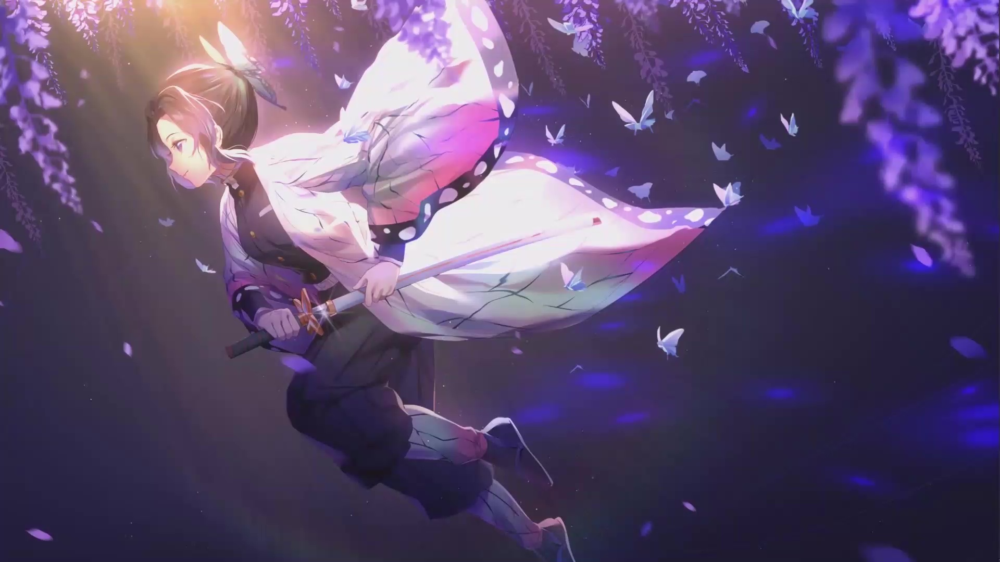
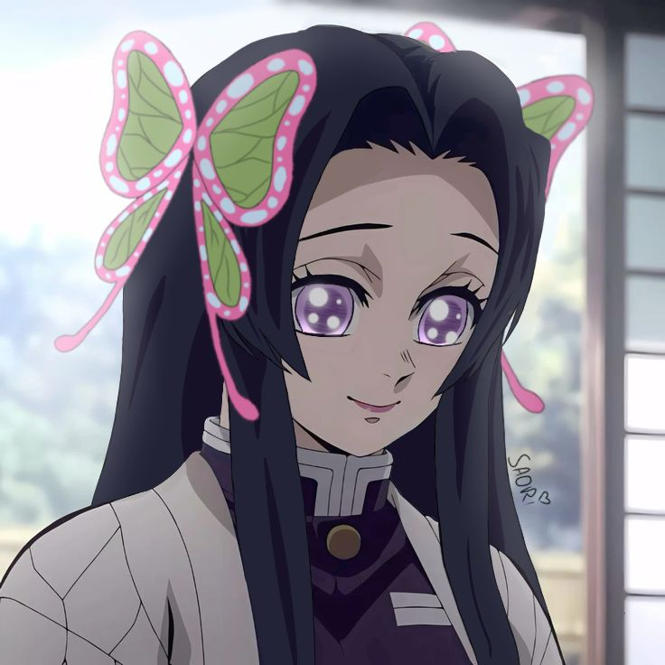

01
Le Papillon
Une silhouette légère, une voix calme et une élégance qui rappelle les ailes délicates d’un papillon. Sa douceur apparente désarme avant même que le danger ne soit compris.
« Quelle belle nuit, n’est-ce pas ? »
« Dommage que vous ne puissiez pas en profiter plus longtemps. »
« Aussi belle et délicate qu’un papillon… aussi mortelle que son poison. »

D’une voix douce et d’un sourire presque immuable, Shinobu donne l’image d’une présence rassurante. Pourtant, derrière cette sérénité se cache une colère profonde, façonnée par les pertes, la douleur et une volonté inflexible de vaincre les démons.

Une silhouette légère, une voix calme et une élégance qui rappelle les ailes délicates d’un papillon. Sa douceur apparente désarme avant même que le danger ne soit compris.
Incapable de trancher le cou d’un démon par la seule force, elle a transformé sa science médicale en arme. Sa lame injecte des poisons de glycine conçus pour détruire ses ennemis de l’intérieur.
Son sourire est aussi un héritage. Sous cette expression paisible subsiste une haine intense des démons et la mémoire de Kanae, qu’elle porte à chacun de ses pas.
Clique sur la fiole. Chaque brume révèle une pensée différente.
Le poison attend en silence.
« Derrière chaque sourire se cache une histoire que personne ne peut voir. »